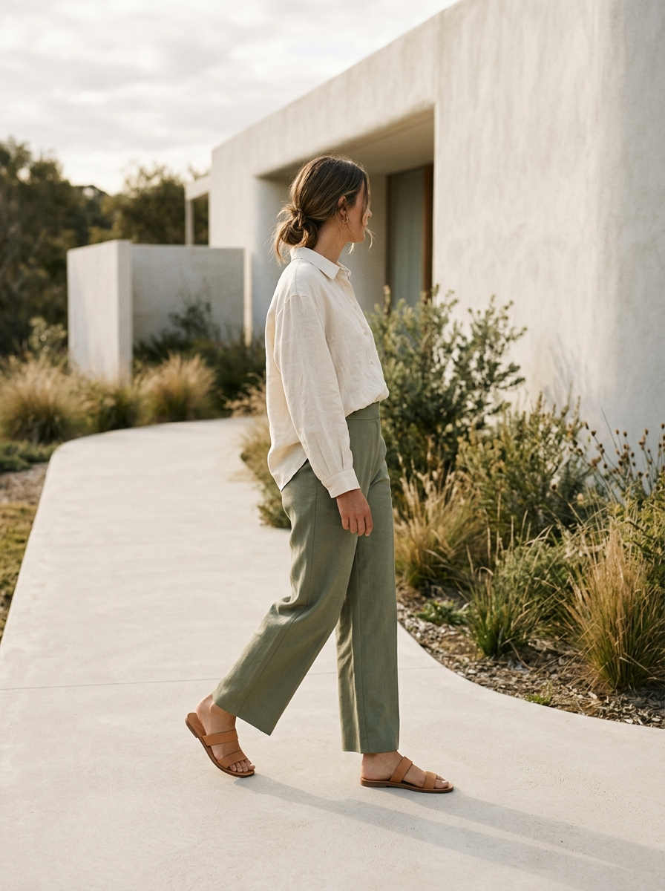

Seni Melambatkan Langkah
Di tengah hari yang serba cepat, berjalan memberi kita alasan sederhana untuk kembali hadir pada sekitar.
Baca ceritaJurnal ABHE Footwear
Catatan tentang keseharian, material, dan proses yang membentuk cara kami melangkah.
Di tengah hari yang serba cepat, berjalan memberi kita alasan sederhana untuk kembali hadir pada sekitar.
Baca cerita
Material yang baik punya karakter sendiri. Perawatan sederhana membantu kita mengenal dan menggunakannya lebih lama.
Baca ceritaBentuk yang sederhana lahir dari banyak pertimbangan: fungsi, kenyamanan, dan bagaimana sebuah benda terasa setelah dipakai.
Baca cerita